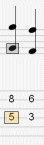
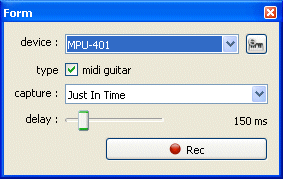
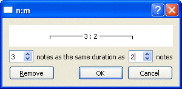
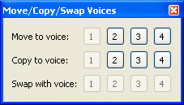

Noteneingabe
Mit Guitar Pro kõnnen Sie Ihre Noten entweder in die Tabulaturnotation
oder in die Standardnotation eingeben (Die Slash-Notenschrift ist nur
eine Ansicht, es ist also unmõglich eine Slash-Eingabe zu machen, aber
wenn man einen Akkord
hinzufügt, wird der Slash hinzugefügt und man kann dann die Rhythmik verändern).
Jede Noteneingabe wird in dem jeweiligen anderen Notationen automatisch
reproduziert.
|
 |
Der Cursor ist ein kleines gelbes, grünes,
blaues oder graues Rechteck,
das der Note entspricht.
Wenn er auf einer Note ist, ist die korrespondierende Note in der anderen
Notation von einem grauen Rechteck
umkreist.
Mit der Taste TAB (Tabulatur),
wechseln Sie zwischen den beiden Notationen.
 Tipp:
Mit dam Menü Note > Ton eine Tablaturlinie
nach unten/oben, kõnnen Sie die Note jeweils auf eine andere Instrumentensaite
nach oben oder nach unten versetzten, ohne dass sich die Note bzw. die
Tonhõhe verändert. Tipp:
Mit dam Menü Note > Ton eine Tablaturlinie
nach unten/oben, kõnnen Sie die Note jeweils auf eine andere Instrumentensaite
nach oben oder nach unten versetzten, ohne dass sich die Note bzw. die
Tonhõhe verändert. |
Ein reiner Mausklick in die Partitur fügt noch keine Note hinzu, bewegt
aber den Eingabezeiger an diese Stelle. Damit werden fehlerhafte Partitureingaben
mit der Maus vermieden.
Plusieurs approches sont possibles pour saisir les notes de la partition
: Andererseits hat man aber viele verschiedene Mõglichkeiten, Noten in
die Partitur hinzufügen:
Eingabeüber die PC-Tastatur
Fast alles kann mit dem numerischen Tastenfeld
erledigt werden:
Mit den Pfeiltasten
bewegen Sie sich in der Partitur,
über die Zahlentasten,
geben Sie die Noten ein,
Mit der + und der -
Taste ändern Sie die Länge der Noten,
Mit der Einfügen
und Entfernen Taste, fügen Sie
Noten ein oder lõschen sie.
Mehr Information: Tastaturkombinationen.
Fall Sie die Verwendung mit der Maus bevorzugen,
haben Sie hierzu folgende Mõglichkeiten der Noteneingabe :
Den Griffbrett
( Ansicht > Griffbrett) des
Instrumentes Ihrer Spur, um Noten auszuwählen;
Die Knõpfe und des
Fenster des Griffsbretts der Gitarre, um sich zu bewegen;
Die Knõpfe der Dauer
der Welt :Instrument, um die Dauer der Noten zu verändern;
Die Menüs Note
> Takt
hinzufügen und Note
> Takt lõschen, um Noten hinzufügen oder zu lõschen.
Mehr
Informationen: der Gitarrenhals
- das Klavier.
Eingabeüber ein MIDI
Instrument
über die Menüleiste Ton
> MIDI Eingang, haben Sie die Mõglichkeit, ein externes MIDI-Instrument
(Keyboard,Gitarre, etc.) zu benutzen, um die Partitur Note pro Note einzugeben.

Sie kõnnen die Latenzzeit einstellen.
Tipp:
Wenn Sie den Rhythmus am Ende der Aufnahme ändern (und nicht nach jeder
Note), kõnnen die Taktlinien an der falschen Stelle gesetzt werden. Benutzen
Sie dann das Hilfsmittel Taktlängenbearbeitung, um automatisch eine Korrektur
der Notation vorzunehmen.
Mehr Information : Ton
konfigurieren.
über das Menü
Datei > Importieren > MIDI/ASCII/PowerTab/TablEdit
kõnnen Sie externe Musikdateien direkt in Guitar Pro importieren.
Mehr information:
MIDI Importieren - ASCII Importieren - Music
XML Importieren - PowerTab
Importieren - TablEdit
Importieren.
Tipp:
Mit der [C] Taste kopieren Sie den ausgewählten Anschlag am Ende des Taktes.
Dies kann u.a. sehr nützlich sein, um Arpeggios zu wiederholen.
Hier einige Tipps, um mit der Noteneingabe anzufangen:
Eingeben von Triolen und n-Tolen
Um Noten zu gruppieren, müssen Sie nur den gewünschten n-tolen Wert
(-3-, -5-, ...) den einzelnen Notenanschläge zuordnen. Guitar Pro wird
automatisch die jeweiligen Noten zu einer Gruppe zusammenfassen, sobald
die Summe der Notenzeitwerte ein Vielfaches der ausgewählten n-Tole ergibt.
Für komplexere n-tolen kõnnen Sie die Anzahl an Noten und die gesamte
Dauer der Gruppe konfigurieren.

N-tolen sindüber die Menüleiste Noten > Notenwert [+/-] verwaltet.
Ebenso ist auch die Verwendung der entsprechenden Symbolleisten mõglich.
Weitere Informationüber n-tolen finden Sie in der Rubrik: Voraussetzungen.
Haltenbõgen
Ein Haltebogen kennzeichnet eine Note die nicht erneut angeschlagen
wird, sondern es klingt die davor angeschlagene Note für den hinzugefügten
Notenwert noch nach; wird also quasi gehalten bzw. verbunden. Die Note
der Verbindung die gehalten wird, wird nur in der Standardnotation als
normale Note angezeigt, aber nicht in der Tabulaturnotation.
Wählen Sie bitte im Menü Noten
> Vorherige Note verbinden , um einen Haltebogen zu der davor
angeschlagenen Note auf derselben Saite zu erzeugen.
Wählen Sie bitte im Menü Noten
> Vorherigen Anschlag verbinden, um alle Noten einen Haltebogen
hinzufügen.
Versetzungszeichen in der Standardnotation (Erhõhung,
Erniedrigung, Auflõsung )
Um Versetzungszeichen in der Standardnotation hinzuzufügen und wieder
zu entfernen, benutzen Sie bitte im Menü Note
> Versetzungszeichen oder die Knõpfe in Welt:
Bearbeiten. Für die Tabulaturnoten ist es mõglich das Versetzungszeichen
zu verändern im Menü Note > Versetzungszeichen
ändern.
Ansicht der Rhythmik
Guitar Proübernimmt automatisch die Ansicht der Rhythmik und der Notenendausrichtung
gemäß der Werte jeder Note und der Taktangabe. Aber es ist auch mõglic,h
manuell Notenbalken oder Notenhalsüber das Menü Note
zu verändern.
Stimmen
Guitar Pro unterstützt die Benutzung
von vier unabhängigen Stimmen innerhalb einer Spur. Mit den Knõpfen kõnnen Sie die Stimme auswählen, die gerade in Bearbeitung
ist. Wenn man nur eine Stimme bearbeitet sind die anderen Stimmen in Grau.
Der letzte Knopf aktiviert die Multi-Stimme Bearbeitung ; man kann sich
im Takt bewegen, ohne sich um die Stimme zu kümmern (nützlich um Noten
zu ändern wenn eine Partitur schon bearbeitet ist, ohne sich um die Stimme
zu kümmern, in der die Note ist) und auch alle Noten in Schwarz anzeigen.
Die Menüleiste Extras > Stimmen
bearbeiten/wechseln ist ein nützlicher Assistent, um Stimmen auf
eine Multi-Stimme Partitur zu organisieren:

Multi-Auswahl
Die Multi-Auswahl
kann eine erhebliche Anzahl von Operationen über
eine Anzahl von Noten oder Takten durchführen ; man kann eine Multi-Auswahl
in einer Gesamtansicht durchführen (nützlich, wenn man viele Takte auswählen
will).
Tipp:
Sie kõnnenüber das Menü Datei > Einstellungen
eine automatische Sicherung aller n-Aktionen einstellen. Es wird damit
eine temporäre Sicherungsdatei erzeugt, die es erlaubt Ihre Guitar Pro-Datei
im Falle einer abnormalen Programmunterbrechung, wiederherzustellen.
Tipp:
Sie kõnnenüber das Menü Bearbeiten >
Rückgängig/Wiederherstellen die Funktion Rückgängig/Wiederherstellen
unbegrenzt aktivieren.